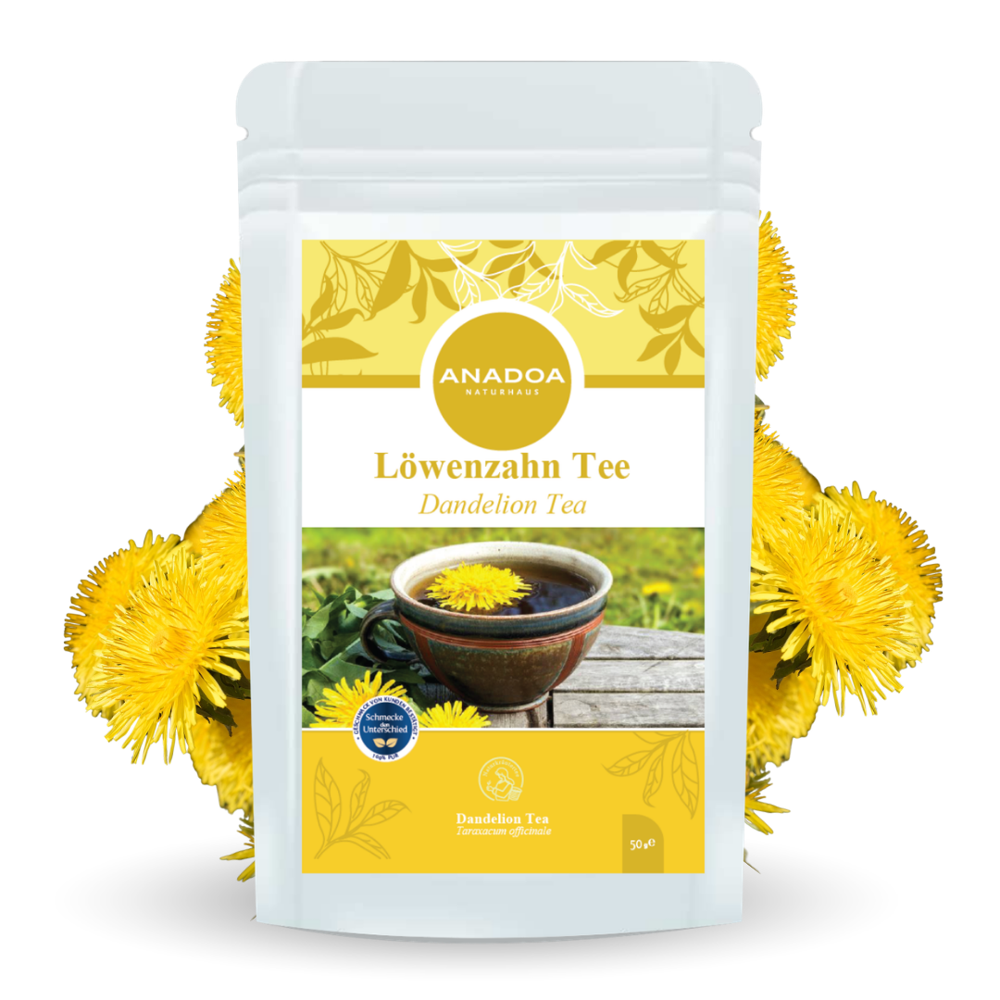

Löwenzahn Tee (Karahindiba) – Das verurteilte Unkraut, das heilen kann
In modernen, perfekten Vorgärten wird der Löwenzahn (Taraxacum officinale) oft als hartnäckiges "Unkraut" gehasst und vernichtet. In der traditionellen europäischen Phytotherapie, in der chinesischen Medizin (TCM) und bei den anatolischen Kräuterkundigen wird "Karahindiba" jedoch als eine der heiligsten und wichtigsten Heilpflanzen überhaupt verehrt.
Der Name "Löwenzahn" bezieht sich auf die scharf gezackten Blätter der Pflanze, und genau diese Blätter bergen ein gewaltiges medizinisches Geheimnis. Für unseren Anadoa Löwenzahn Tee verwenden wir ausschließlich wild gesammelte, extrem robuste Blätter aus den höheren Regionen Anatoliens. Dort, wo der Boden unberührt ist, speichert die Pflanze massive Mengen an Mineralien (vor allem Kalium) und spezifischen Bitterstoffen. Es ist diese reine, wilde Essenz, die den Löwenzahntee zum ultimativen Werkzeug für die physische Entgiftung macht.
Löwenzahn Tee als Neustart für die Leber (Hepatischer Schutz)
Unsere Leber ist das wichtigste Entgiftungsorgan des Körpers. Sie verarbeitet täglich unzählige Stoffwechselabfälle, Toxine aus Umwelt und Ernährung, Medikamente und Alkohol. Wenn die Leber überlastet ist, zeigen sich Symptome wie chronische Müdigkeit, unreine Haut, Blähbauch und ein träger Stoffwechsel.
Löwenzahntee ist ein hochwirksames Hepatikum (Lebermittel). Die in den Blättern enthaltenen spezifischen Bitterstoffe (Taraxacine) haben die faszinierende Eigenschaft, direkt an den Geschmacksrezeptoren auf der Zunge anzudocken und dem Gehirn das Signal zu senden, die Verdauungssäfte hochzufahren. Dies stimuliert sanft die Durchblutung der Leber und fördert die Zellregeneration des Lebergewebes. Eine 3-wöchige Kur mit Karahindiba-Tee (täglich zwei Tassen) wirkt wie ein "Frühjahrsputz" für die Leberzellen, hilft angesammelte Gifte auszuschwemmen und gibt dem Körper seine vitale Energie zurück.
Choleretische Wirkung - Anregung der Gallenproduktion dank Löwenzahn Tee
In direkter Synergie zur Leber steht die Gallenblase, die für die Fettverdauung verantwortlich ist. Ein träger Gallenfluss führt zu Völlegefühl, Übelkeit nach fettigen Speisen und starken Blähungen.
Löwenzahn hat eine nachgewiesene choleretische und cholagoge Wirkung. Das bedeutet, das Kraut regt die Leberzellen aktiv an, mehr frische Gallenflüssigkeit zu produzieren, und stimuliert gleichzeitig die Gallenblase, sich zusammenzuziehen und den Saft in den Zwölffingerdarm abzugeben. Dies beschleunigt den Abbau von Fetten aus der Nahrung massiv, entlastet den Magen sofort und verhindert, dass halb verdaute Nahrungsreste im Darm gären. Wer oft unter einem "Stein im Magen" nach dem Essen leidet, findet in Löwenzahntee ein schnelles, natürliches Hilfsmittel.
Starke Diurese - Entwässerung ohne Kaliumverlust dank Löwenzahn Tee
Neben der Leber-Wirkung sind die Löwenzahnblätter berühmt für ihre enorm harntreibende (diuretische) Eigenschaft. In der französischen Sprache heißt die Pflanze nicht umsonst "Pissenlit" (Piss ins Bett). Er spült die Nieren massiv durch und hilft dem Körper, schwere Wassereinlagerungen abzubauen.
Der geniale biochemische Trick des Löwenzahns: Herkömmliche, chemische Entwässerungsmittel schwemmen zusammen mit dem Wasser oft auch lebenswichtiges Kalium aus dem Körper (was zu Muskelkrämpfen und Herzrhythmusstörungen führen kann). Die Löwenzahnblätter selbst enthalten jedoch von Natur aus astronomisch hohe Mengen an organischem Kalium! Während der Körper also Wasser ausscheidet, füllt der Tee die Kaliumspeicher zeitgleich wieder auf. Ein perfekter, absolut sicherer Kreislauf der Natur.
Die ideale Zubereitung und Anwendung von Löwenzahn Tee
Bei der Zubereitung von Löwenzahntee muss man sich an einen Gedanken gewöhnen: Gesundheit schmeckt oft bitter. Und genau diese Bitterstoffe sind es, die uns heilen.
Die Zubereitung: Geben Sie 1 bis 2 Teelöffel der losen Blätter in eine Tasse. Übergießen Sie diese mit kochendem Wasser (ca. 95°C) und lassen Sie den Tee für 10 bis 15 Minuten abgedeckt ziehen. Je länger Sie ihn ziehen lassen, desto mehr hochwirksame Bitterstoffe werden in das Wasser extrahiert. Um die Leber und Galle maximal zu stimulieren, trinken Sie diesen Tee am besten in kleinen Schlucken etwa 15 Minuten vor einer großen Mahlzeit oder als reine Detox-Kur morgens auf nüchternen Magen. Bitte süßen Sie den Tee nach Möglichkeit nicht, da Zucker das bittere Nervensignal auf der Zunge blockieren würde!
Warum der Löwenzahn Tee von Anadoa die beste Wahl ist
Löwenzahn wächst an jedem Straßenrand. Aber Pflanzen, die an befahrenen Straßen oder neben konventionellen Äckern gesammelt werden, sind massiv mit Schwermetallen (aus Abgasen) und Pestiziden verseucht. Da die Leber diese Gifte abbauen muss, wäre ein solcher Tee das pure Gift für den Körper.
Unser Anadoa Löwenzahn stammt tief aus den Bergen Anatoliens. Er wächst wild auf unberührten, reinen Böden. Er wird im Vollbesitz seiner Bitterstoffe geerntet, schonend luftgetrocknet und grob geschnitten. Es ist die absolut reinste, sauberste Form der anatolischen Kräuterkunde – für eine Entgiftungskur, der Sie zu 100 % vertrauen können.
Häufig gestellte Fragen (FAQ)
Schmeckt
Löwenzahntee extrem unangenehm bitter?
Er besitzt eine sehr deutliche, grasige und herbe Bitternote. Da die moderne Ernährung fast keine Bitterstoffe mehr enthält, empfinden viele Menschen dies anfangs als ungewohnt. Aber genau dieser bittere Reiz auf der Zunge ist zwingend nötig, um die Leber zu aktivieren!
Sollte ich
den Tee vor oder nach dem Essen trinken?
Wenn Sie die Fettverdauung (Galle) und die Leber anregen möchten, trinken Sie eine Tasse etwa 15 bis 30 Minuten VOR dem Essen. Als reine Entwässerungskur (Diurese) kann er auch unabhängig von den Mahlzeiten über den Tag verteilt getrunken werden.
Darf ich den
Tee dauerhaft trinken?
Nein. Kräuter mit starker physiologischer (wie harntreibender) Wirkung sollten immer als 'Kur' eingesetzt werden. Wir empfehlen eine Intensiv-Kur von 3 bis 4 Wochen (täglich 1-2 Tassen) und danach eine Pause von einigen Wochen.
Wer sollte
auf Löwenzahntee verzichten?
Personen, die unter akuten Gallenwegsverschlüssen, Gallensteinen (Kolikgefahr!) oder einem Darmverschluss leiden, dürfen aufgrund der stark gallentreibenden Wirkung keinen Löwenzahn konsumieren. Auch bei akuten Magengeschwüren ist Vorsicht geboten.
Verliere ich
durch die starke Entwässerung keine wichtigen Elektrolyte?
Im Gegensatz zu chemischen Diuretika enthält die Löwenzahnpflanze selbst gigantische Mengen an Kalium. Der Tee führt dieses lebenswichtige Elektrolyt direkt wieder zu, während er das Wasser ausschwemmt.